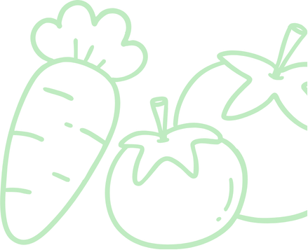
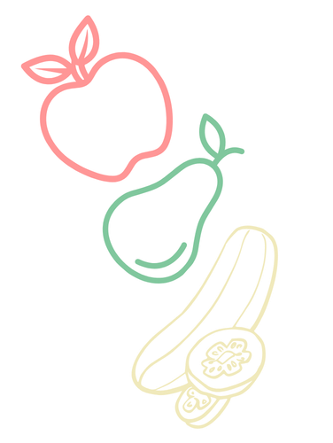
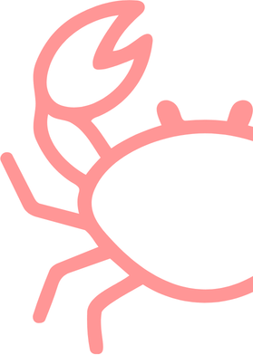
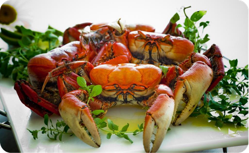
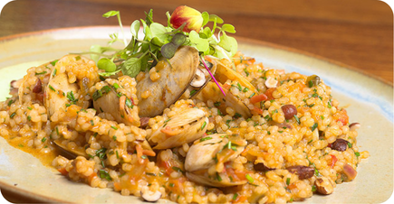
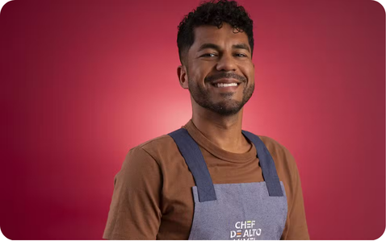

A Caranguejada é um símbolo da identidade
caiçara e da gastronomia do litoral paranaense.
Servido quente com vinagrete e pirão, o
caranguejo-uçá une famílias em um rústico ritual
social nas praias da região. Além da tradição,
o
prato atrai milhares de turistas para festivais em
Pontal do Paraná e Paranaguá,
movimentando a
economia dos pescadores locais durante a
temporada de captura.
Considerada uma das maiores riquezas
gastronômicas do nosso
litoral, a Tainha é
tradicionalmente assada inteira, no forno ou na brasa,
deitada sobre uma cama de cebolas e batatas. A
tradição é marcada pela temporada de pesca
tão
aguardada durante as estações mais frias do ano, que
impulsiona o turismo e valoriza o
trabalho dos nossos
pescadores locais há mais de três décadas.


O Arroz Lambe-lambe é um prato tradicional do
litoral Sul que se origina de uma maneira mais prática
que os antigos pescadores criaram para
se alimentar
durante o trabalho: eles levavam apenas uma panela
de arroz para o mar e
preparavam sua comida
improvisadamente com os mariscos recém-pescados,
usando a própria
concha para comer como uma colher
e lambendo os dedos.

O nosso litoral orgulha-se por acolher um cozinheiro tão dedicado e
apaixonado por 17 anos em seu berço: O cozinheiro Lucas Correia,
participante que representou o
Paraná na temporada de 2025 do programa
“Chef de Alto Nível”, da rede Globo. Em 2026, o chef
celebra 20 anos na
gastronomia profissional.
Esses pratos são responsáveis por unir cidadãos antigos e
apaixonados pela nossa
tradição em festivais de celebração
todos os anos. Mais do que sustento, essa culinária reflete o
modo de vida caiçara, onde a farinha de mandioca, a
banana e o frescor dos frutos do mar contam a
história da
cidade mais antiga do estado.